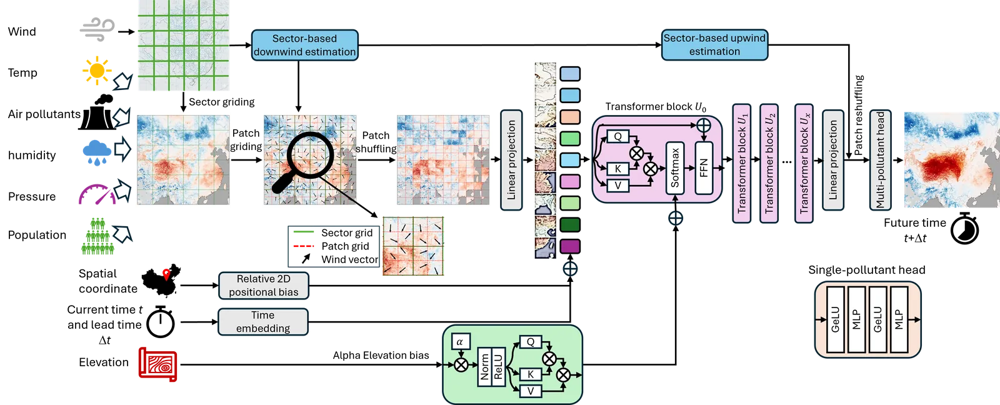
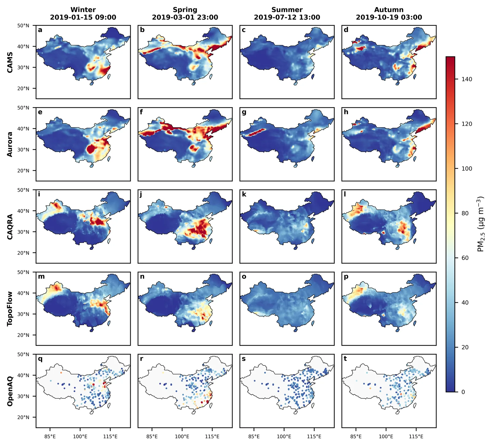
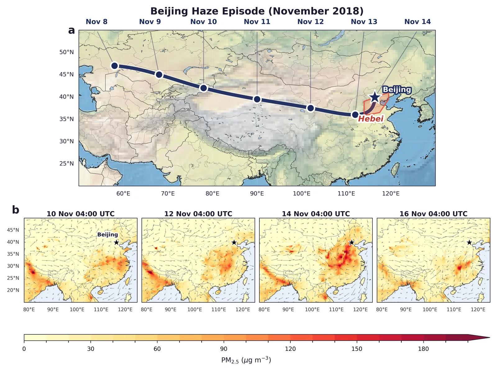
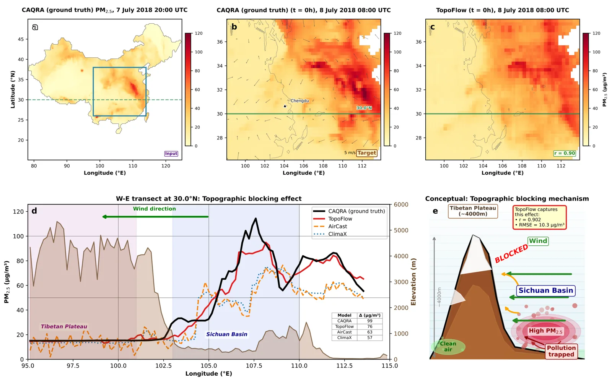
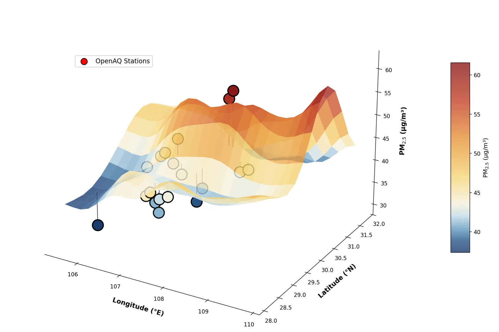

TopoFlow is a Vision Transformer for daily multi-pollutant air quality forecasting over China, extended with two physics-informed components that turn raw atmospheric reanalysis data into accurate, station-validated predictions of PM2.5, PM10, NO2, SO2, O3 and CO.
The first contribution is a wind-following patch reordering: instead of feeding patches in fixed raster order, we re-sort them along the prevailing wind so the transformer attends in the direction pollutants actually travel. The second is an elevation-aware attention bias: terrain barriers like the Sichuan Basin trap pollutants, and the model is told about that geometry through a learnable bias informed by digital elevation maps.
I led the model design, training, and evaluation. The paper was published in npj Climate and Atmospheric Science (Nature Portfolio) on 24 April 2026.
npj CAS
Nature Portfolio
24 Apr 2026
71–80 %
Improvement
over operational forecasting systems
13 %
Improvement
over state-of-the-art AI baselines
9.71µg/m³
PM2.5 RMSE
over China, 12–96 h ahead
Key ideas
- Wind-following patch reordering. Patches are re-sorted along the prevailing wind so attention flows in the direction pollutants actually move, not in raster order.
- Elevation-aware attention bias. A learnable bias keyed on digital elevation lets the model encode topographic blocking, like the Sichuan Basin trapping haze for days.
- Multi-pollutant, single model. Six species predicted jointly, sharing the atmospheric representation rather than training six separate models.
- Validated against ground stations. Compared to CAMS, Aurora and CAQRA on OpenAQ stations, with case studies on the Beijing November 2018 haze and Sichuan Basin blocking.
Visualisations

Architecture: wind-guided patches + elevation bias
Seasonal comparison vs. CAMS, Aurora, CAQRA
Beijing haze, November 2018
Sichuan Basin: topographic trapping
3D PM2.5 surface with OpenAQ validation TopoFlow vs. ground truth, 2018 (animated)Resources
Credits
- Authors
- A. Kheder, H. Toropainen, W. Peng, S. Antão, J. Chen, M. Boy, Z.-S. Liu
- Venue
- npj Climate and Atmospheric Science, Nature Portfolio, 2026
- Compute
- LUMI supercomputer (AMD MI250X GPUs)
- Affiliation
- LUT University, Atmospheric Modelling Centre (AMC-Lahti)